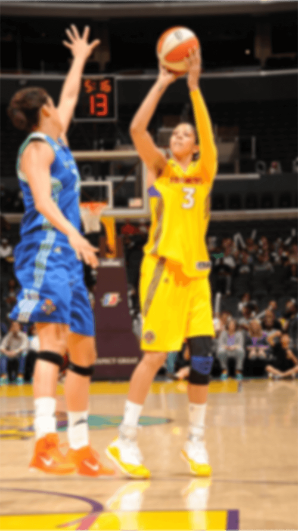

<section class="p-record-training">

  <!--START IMAGE-->
  
  <!--END IMAGE-->

  <!--START BUTTON-->
  <div class="p-record-training__content">
    <div *ngIf="isFinished; then templateFinished else templateTimer">
    </div>
    <!--END BUTTON-->

    <!--START TIMER-->
    <ng-template #templateTimer>

      <div class="p-record-training__timer">

        <p class="t-big"><span class="t-dark-blue">{{currentTimer}}</span> <br><span class="t-common">minutes</span></p>

        <a class="p-record-training__button a-button a-button--full" [routerLink]="isFreeTraining ? '/data' : '/single-training'">
          Arrêter l'entrainement
        </a>

      </div>

    </ng-template>
    <!--END TIMER-->

    <!--START POPIN-->
    <ng-template #templateFinished>

      <div class="p-record-training__finish">

        <p class="p-record-training__title t-dark-blue t-title">Entraînement terminé ! </p>

        <p class="p-record-training__message t-dark-blue t-common">
          Tu t’es bien entrainé ! <br>
          Ça a peut-être été dur mais tu as tenu, c’est de cette façon qu’on obtient ce que l’on veut ! Courage !
          <br>
          <br>
          Entre le nombre de panier que tu as marqué et retrouve tes statistiques.
        </p>

        <div class="p-record-training__input c-form__row">

          <label class="c-form__label t-label" for="points">
            
          </label>

          <input class="c-form__input t-common" type="number" name="points" id="points" placeholder="000">

        </div>

        <a class="p-record-training__button a-button a-button--full" [routerLink]="'/data'" [queryParams]="{time:1}">
          OK
        </a>

      </div>

    </ng-template>
    <!--END FINI-->

  </div>
  <!--END POPIN-->

</section>
